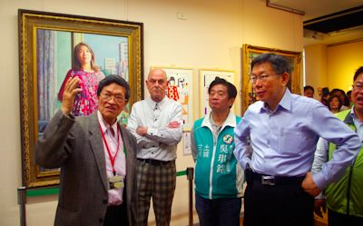

選戰倒數40天
參選人搶「大咖」加持 柯文哲：只有坐台沒站台
連珮宇、王宣晴、魏莨伊、王長鼎｜聯合報／新北市新聞｜2015年12月6日
昨天新北市各區立委參選人造勢拚場，民進黨第3選區現任立委高志鵬，和新北市第10選區立委參選人吳琪銘，都請來柯文哲參加「藝文活動」，避開助選爭議，新北市第7選區立委參選人羅致政，則請來父母拉票助選。
民進黨新北市第3選區現任立委高志鵬擔任「2015三重紙風車創意園遊會」公益大使，昨天活動登場，高志鵬昨邀台北市長柯文哲今一同到場觀賞，柯文哲強調只是來玩玩，「只有坐台而已，沒有站台。」
柯文哲說，選舉不需要搞得太悲情，畢竟政治沒有那麼難，就是用簡單的心靈，面對複雜的世界，鼓勵台灣其他候選人也可以化身公益大使，把歡樂帶到各個城鎮。
民進黨新北市第10選區立委參選人吳琪銘，昨也邀柯文哲參訪李梅樹紀念館，並到清水祖師廟參拜，進行一場「三峽文化小旅行」，柯文哲對於紀念館迷你空間很在意。他表示，台灣一直以來對本土藝術保存不夠認真，應該以更好、更大的展出空間，給台灣重要畫家李梅樹應有的對待。
吳琪銘昨天上午成立清水後援會，也請來民進黨前主席蘇貞昌站台力挺，吳琪銘提出幸福168政策，承諾當選要遷移金城變電所和看守所、興建清水交流道，表示他30年前隻身從雲林北上來土城打拚，最瞭解基層需求，盼讓從沒出過立委的清水地區選出在地立委。
新北市第7選區立委參選人羅致政也拚政黨輪替，昨成立埔墘後援大會，請出羅爸羅媽向鄉親拜票，盼現場逾300位支持者「1天1通電話」為他拉票、助選，40天就有超過1萬票的力量，小兵也能立大功。